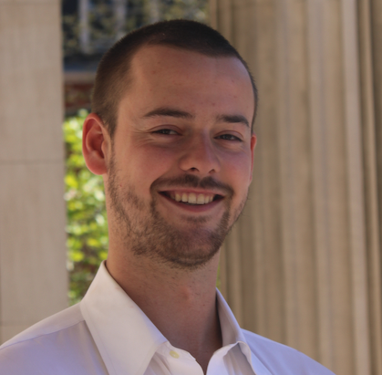

Cyrus Illick
I'm a Computer Science PhD student at Columbia University, advised by Vishal Misra and Dan Rubenstein. I work on time-series modeling and causal inference, in particular counterfactual estimation. I'm especially interested in the potential of time-series and tabular foundation models, and how they compare with statistical methods designed around the assumptions of a particular problem. I have also worked on Internet congestion control, focusing on how different end-to-end algorithms compete for shared bandwidth.
Research interests: time-series and tabular foundation models, training foundation models on synthetic data, time-series modeling and forecasting, causal inference.
I received a B.A. (2023) and an M.S. (2025) in Computer Science from Columbia.

Publications
Saeyoung Rho, Cyrus Illick, Samhitha Narasipura, Alberto Abadie, Daniel Hsu, Vishal Misra
AISTATS, 2026
arXiv / workshop version (Learning from Time Series for Health @ NeurIPS 2025)
We extend synthetic control with a state-space model (Kalman filter, RTS smoother) that uses the time ordering standard synthetic control ignores, improving accuracy in many settings.
Cyrus Illick, Michael Roger, Vishal Misra, Dan Rubenstein
New Ideas in Networked Systems (NINeS), 2026
paper
We show that congestion control algorithms share bandwidth unpredictably as propagation delay varies, and design a sender-side control loop, run alongside existing algorithms, that equalizes the delay every flow sees, making bandwidth shares predictable.
Cyrus Illick, Saeyoung Rho, Vishal Misra
Causality in the Age of AI Scaling Workshop @ AISTATS, 2026 (Best Paper Runner-Up)
Viewing counterfactual estimation as forecasting with known future covariates, we ask whether time-series and tabular foundation models (TimesFM, Chronos, TabPFN) can compete with existing synthetic control methods, testing several ways to input the data and identifying where they show potential.
Teaching
- CSEE 6180: Modeling and Performance Evaluation — TA, Fall 2025 and Fall 2026
- COMS W3261: Computer Science Theory — TA, Spring 2021 and Fall 2022
- COMS W3203: Discrete Mathematics — TA, Summer 2021
- CSEE W3827: Fundamentals of Computer Systems — TA, Spring 2021